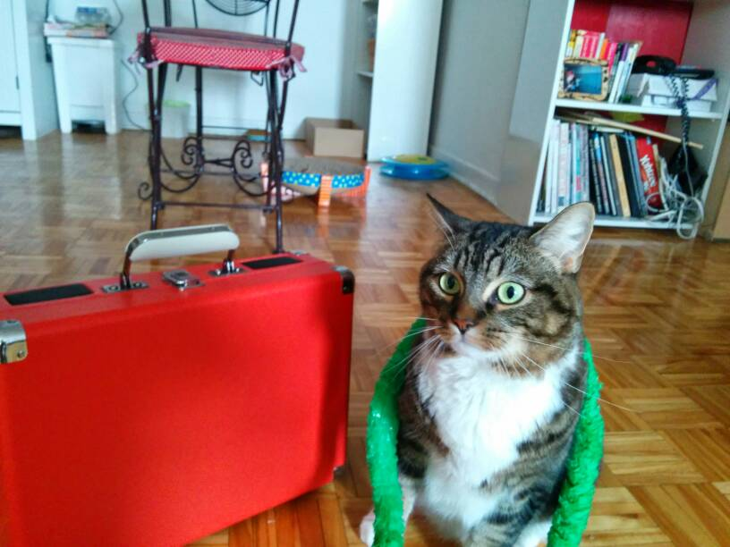
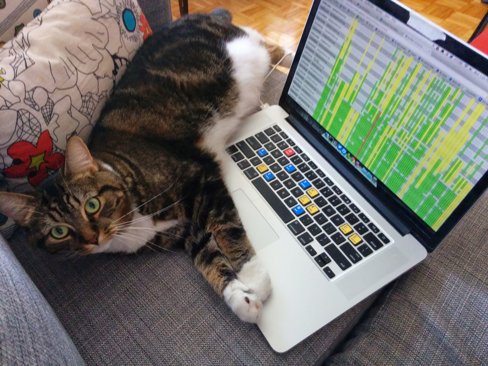

<link rel="import" href="../../polymer/polymer.html">
<link rel="import" href="../../iron-ajax/iron-ajax.html">
<link rel="import" href="../../iron-pages/iron-pages.html">
<link rel="import" href="../../iron-flex-layout/classes/iron-flex-layout.html">

<dom-module id="cat-alogue">
    <template>
        <style>
            :host {
                display: block;
            }

            .pic {
                height: 375px;
            }
        </style>

        <!-- usamos selected para definir qual section irá aparecer primeiro. 0 a primeira, 1 a segunda e assim por diante.
            Se quiser utilizar texto para definir quem irá aparecer, é necessário usar "attr-for-selected" e passar a propriedade que sera utilizada para definir o selecionado, depois em cada section, colocar o valor referente a cada um. Não é possível coexistir a busca por texto/data e por numero. Ou é um ou outro.
        -->
        <iron-pages id="pages" selected="{{selected}}" attr-for-selected="data-cat">
            <section data-cat="pretty">
                
              </section>
              <section data-cat="vacation">
                
              </section>
              <section data-cat="hacker">
                
              </section>
        </iron-pages>
        
        <div class="controls layout horizontal justified">
            <button on-tap="_goPrev">Prev</button>
            <input type="text" value="{{selected::input}}">
            <button on-tap="_goNext">Next</button>
        </div>
    </template>
    <script>
        Polymer({
            is: 'cat-alogue',
            properties: {
                selected: {
                    type: String,
                    value: 'hacker'
                },
                // selected: {
                //     type: Number,
                //     value: 0
                // }
            },
            _goPrev: function () {
                // é possivel pegar um element pelo id igual a forma abaixo: this.$.elemento
                // tanto a função selectPrevious quanto a selectNext são behaviors que iron-pages herda de ironSelectableBehavior. Dessa forma é possivel fazer a logica de avançar e voltar utilizando eles.
                this.$.pages.selectPrevious();
            },
            _goNext: function () {
                this.$.pages.selectNext();
            }
        });
    </script>
</dom-module>